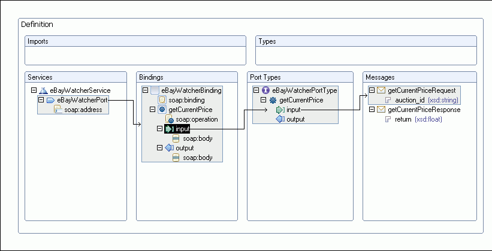

Once you have created a WSDL file, you can edit it in the WSDL editor. You can also import WSDL files you have created into the workbench and edit them in the WSDL editor.
To open a WSDL file in the WSDL editor, double-click it in the Navigator view or right-click it and click Open With > WSDL Editor.
At any time, you can switch to the Source view to review the source code of the WSDL file. You can also edit your WSDL file directly in the Source view.
The Design view provides a graphical way to browse and edit your WSDL file. Each type of top level wsdl object is shown within a tabular view (for example, service, binding, port type). Each tabular view contains one or more rows that represent the structure of the object. The service, binding, and port type objects are 'linked'. A line displays to denote a reference (or association) between these objects.

The Properties view displays a list of attributes and editable attribute values of a selected wsdl object.
The Properties view contains the following panes (by clicking and selecting the appropriate pane) to edit:
The Outline view will show you all the items in your WSDL file as you add them. In this view, you can both create and delete WSDL components.
The Outline view contains the following folders you can use (by right-clicking and selecting the appropriate option) to edit your WSDL file: